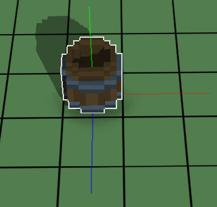
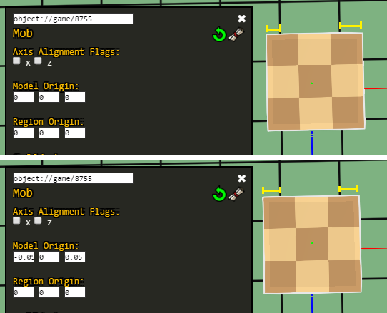
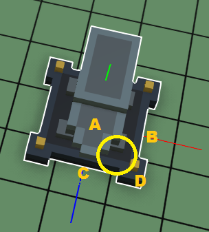
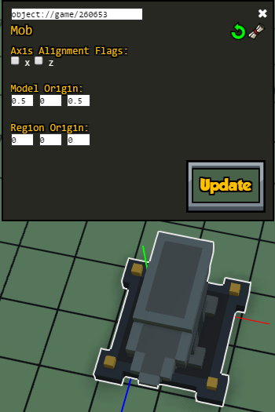
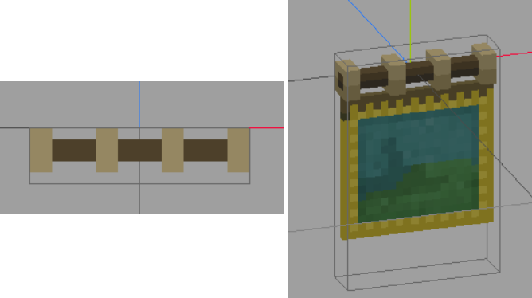

Origins
You can define the center (origin) of your objects and how they will rotate by using the mob component.
In general, models have an origin at the centre of the surface to which they are attached. For furniture, they are normally attached to the ground, so the origin is at the centre of the bottom. Some decorations are attached to walls, so their origin is the centre of the block that attaches to the wall. Other items like weapons and armor have special rules for their origins and so aren't discussed here. Check this page for how to align them.
If you have debug keys enabled, you can press F11 to see the axes of a given object. They represent where the origin (0,0,0) is in the voxel editor for that model, the point around which the object will rotate in the game, and the location where the game thinks that the entity is. Here's a barrel icon and you can see that the origin comes from the middle of the bottom. 
Model origin
The model_origin is an offset (defined in terms of the world axis coordinate system) so that the model aligns well with the world. It works based on the origin of the model itself (which is defined in Qubicle/your voxel editor).
Normally all objects (except hangable ones, weapons, and most of the objects meant to be animated) are centered over 0 for their width and length and aligned with the ground in your voxel editor.
We can use debugtools to help us determine the model origin. In the game, place the item in the ground and open the Entity Editor. Make sure the object is not axis aligned by unchecking the check boxes for X and Z under "Axis Alignment Flags" and clicking the "Update" button.
Now we can click on the "Rotate Entity" button (a circular green arrow) and see if our model rotates correctly (the first time you click this button it will reset the model to a default rotation, then the next times it will cycle through the rest of directions in order).
The axes should match exactly the same part of the model no matter which direction it's facing.
If our model doesn't rotate correctly, we need to determine where should its model_origin be.
Model origin for odd-sized models:
Some models have X and Z dimensions that are not exactly divisible by 2. Setting their model origin is easy because there is a single voxel that is the center of the model.
When this happens, you set that dimension to 0.05 so that it corrects the alignment in the world. The value should always be 0 or + or - 0.05 (given that the default scale for objects is 0.1). If the model needs to be positioned by larger amounts, then you can and should do that in your voxel editor.
For instance, if you create an object in Qubicle that is 3x3 blocks in the X and Z directions, you'll need to set model_origin to something like -0.05 for X and 0.05 for Z. Try it out in the Entity editor and click on "Update" to apply the changes, then try rotating the object again and observe if the model gets displaced.

Whether you use -0.05 for X or Z depends on how you orient the object itself around the origin in Qubicle. With this example, the central voxel is placed in the positive direction of both X and Z. X set to -0.05 because that is the difference between the origin point (0,0,0) and the actual centre of the object (0.05, 0, 0.05) in Qubicle.
But why is Z +0.05 when X is -0.05? As discussed before, the coordinate system of Qubicle is different to the coordinate system of Stonehearth. The exact difference is the direction of the Z-Axis. In Qubicle, the positive Z-Axis points towards the back of an object (or the "north"). In Stonehearth, the positive Z-Axis points to the front of an object (or the "south"). So you actually want to use the opposite adjustment in the Z-Axis compared to the model position in Qubicle.
Model origin for even-sized models:
For a model where either one or both of the sides are even, you have to decide which of the off center points the model will rotate around.
If we have an object that is 2 world units wide and long, then the true centre of the object is where 4 blocks join and not at the centre of one. For example, if we want to align this anvil to occupy 2x2 units, the center would be where the yellow circle is: 
Any of the grid squares A, B, C, or D can serve as the rotation point. Since the anvil will be a 2x2, let's choose grid square A to be the rotation center. We have to manually move the anvil model half a block in X and Z so that quadrant A (where the axes are) is in the back left corner.
Setting the model origin to be (0.5, 0, 0.5) moves the anvil model so that visually, the back left of the model is on top of the green line. Now the anvil fits within a 2x2 grid, which is what we wanted: 
We could also have moved the anvil in other direction to make it fit within the 2x2 grid, in which case the rotation point might not have been in square A.
 If you modified the scale of your item in the render_info component, the values for the origins might not be exactly 0.05 or 0.5, you'll have to try other values until it feels right.
If you modified the scale of your item in the render_info component, the values for the origins might not be exactly 0.05 or 0.5, you'll have to try other values until it feels right.
About axis alignment flags
The axis alignment flags are a cheap way to align models to the grid, especially if they're even sided, but they may require that the model is moved in the QB file if one of the lengths is odd. It might not always be possible to use them if the object has animations that expect the model's matrices to be in a specific location.
In the stonehearth mod, they're normally used for windows, doors, some containers and some other entities that have scale 1:1 with the world. You can try checking one or both in the Entity editor and see if they align your model to the world like you wanted.
Bear in mind that you might still have to adjust your model in the QB file or adjust the model origin manually.
Region origin
This is an offset for the origin of the region_collision_shape and destination regions so that they align well with the world.
It is based on the model origin. Since the origin of a model is in the centre of a world unit, usually you'll want to set your region_origin to something like
"mob" : {
"region_origin" : { "x": 0.5, "y": 0, "z": 0.5 }
}
This puts the origin of the regions at the corner of the block to the south-east of the model origin. You could use another value, but consistency helps. If your region_origin does not align with a block corner, there is a good chance your regions will not align correctly in the world when the object is rotated for placement.
When the true centre of the object is the same as the corner of 4 blocks, then we should always set the region_origin to that point. If the true centre is in the centre of a block, then we should set the region_origin to the south-east corner of that block.
For a 2x2 object, model_origin and region_origin will be
"mob" : {
"model_origin" : { "x": 0.5, "y": 0, "z": 0.5 },
"region_origin" : { "x": 0.5, "y": 0, "z": 0.5 }
}
If your region_origin is incorrect, the collision region will not match the position of the model as it rotates.
Where should origins go
The origin information for your object should go in the ghost.json file when it is available. The regular JSON file mixes information in from the ghost.json file, so you won't need to repeat it.
If your object can't be placed in the world by the player, then it won't have a ghost.json file and only then do you put your origin information in the regular json file. Failure to do so leads to situations where the ghost object and regular object do not have the same origins and the position of the object jumps when an item is placed.
Once you have your object properly aligned and the numbers sorted out in the Entity editor, it's time to paste your numbers into the JSON file.
To get the mob JSON, click on the scroll icon next to the Mob entry in the Entity Editor. It's called "Show Json". Then copy the automatically generated JSON from the window that pops up and paste it into the components section of the ghost.json file.
About hangable items
For items with the "placeable_in_walls" flag in their entity forms component, the model origin might be shifted in the Y axis as well (not all items need it). It might be difficult to edit hangable items with the Entity editor, though, so you might need to adjust the values in JSON directly.
For example the tapestry has this model origin:
"model_origin": { "x": 0, "y": -0.5, "z": -0.5 }
In Qubicle we need to align the part of the model that will be hanging from the wall with (0,0,0). Also it should be in the negative Z space, so that it's easier to align it with walls later. Some hangable items (like planters for the windows) might not be aligned like this in Qubicle.

The region origin for hangable items follows the same rules than for any other entity.